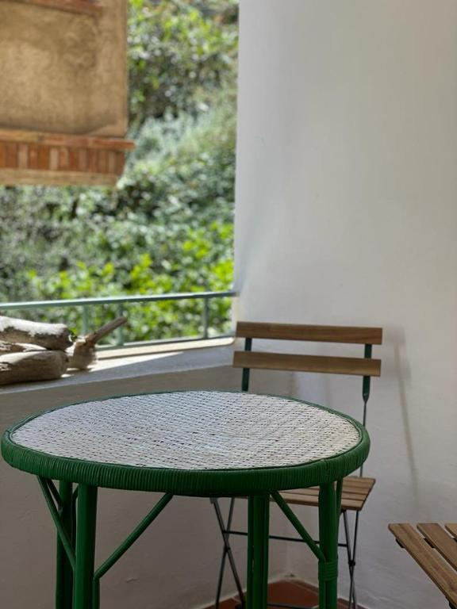

Peregrinos Bravos
›
Viaje 02
›
Etapa 01
Etapa 01
Walter Benjamin
San Pere de Rodes → Port de la Selva → Llançà → Colera → Portbou
San Pere de Rodes
Port de la Selva
Llançà
Colera
Portbou
Lectura
Una conversación con Walter Benjamin
Una conversación simulada con el filósofo, preparada como lectura previa al camino que él recorrió en sentido inverso.
Abrir la conversación →
Etapa 02 — Machado →
Mapa de la etapa
Alojamiento
Alojamiento — Noche 1
Piso en la Costa Brava

Ver en Booking →